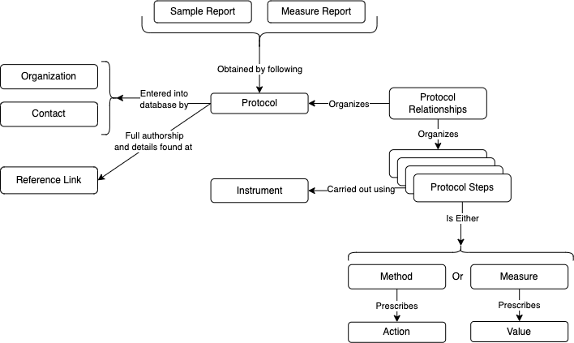

Recording protocols
When analyzing data from various sources, it is important to understand how the data was produced. The PHES-ODM recognizes this and includes protocols as one of its entities. To store protocols efficiently in database tables, several challenges must be addressed:
- Protocols are comprised of a collection of steps.
- Protocol steps can consist of various things:
- They can prescribe the use of a specific quantity of something. This can be described using the different measures found in the PHES-ODM dictionary and assigning them a prescribed value and unit of measurement.
- They can prescribe an action. The PHES-ODM calls this a method.
- Protocol steps must be organised in the right order to convey the meaning of the protocol.
- Steps may follow each other, or they can be done concurrently.
- Measures found inside a protocol usually are usually there to specifies the quantity of reagents, supplies and conditions involved in the realization of a method.
- Different protocols may use some of the same steps, but in a different order.
- Protocols may have steps that consist in one or several (sub)protocols.
To solve these constraints, the PHES-ODM stores a record describing the protocol itself (e.g., what it does, who developed it) separately from its constituent steps. The entries in the steps table are either methods or measures. Then, the relationships linking the various steps of the protocol are extracted into their own table. Rows in the relationship table have four main attributes. The first is the identifier of the protocol for which the relationship holds. The three others define a relationship between two of the steps of the protocol in question. The relationship is expressed in the form:
subject→relationship→object
Where the subject and the object can either be a subprotocol or a protocol step. The available relationships (e.g., is_before, specifies, is_concurrent_with, etc.) allows one to organize the protocol is a more semantically meaningful way than by simply using a sequential order.
This flexible structure allows protocol steps and subprotocols to be reused in any number of protocols. The relationships between protocols, protocol orderings and protocol steps are shown in Figure A.
